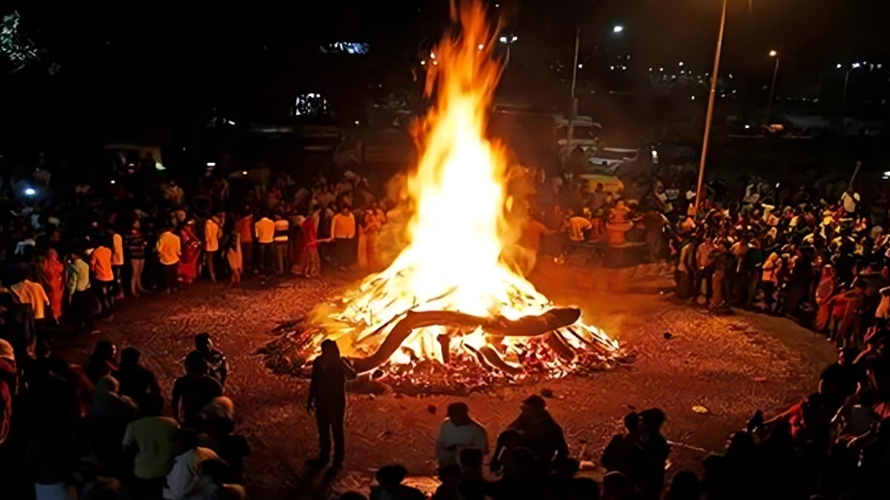
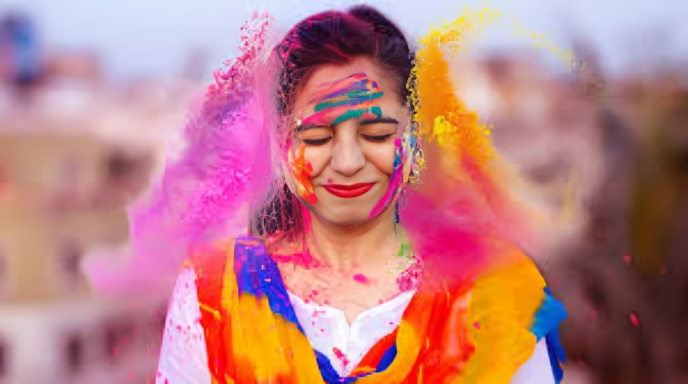
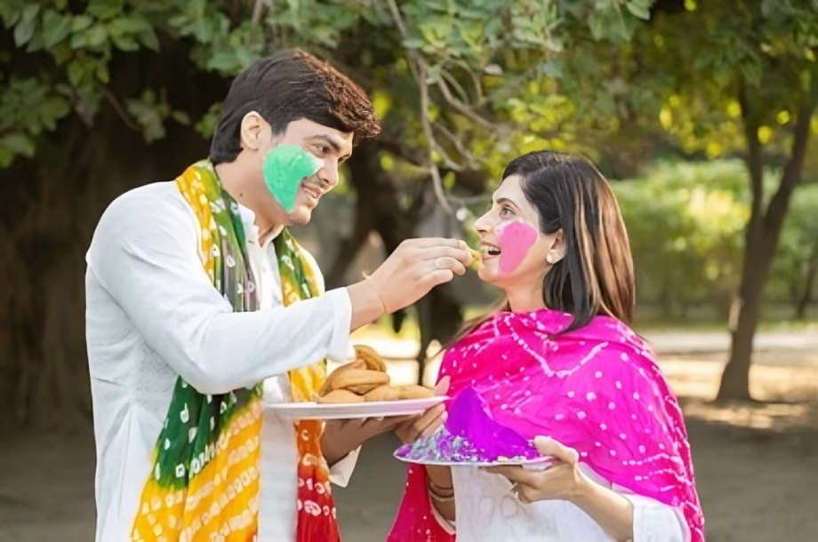
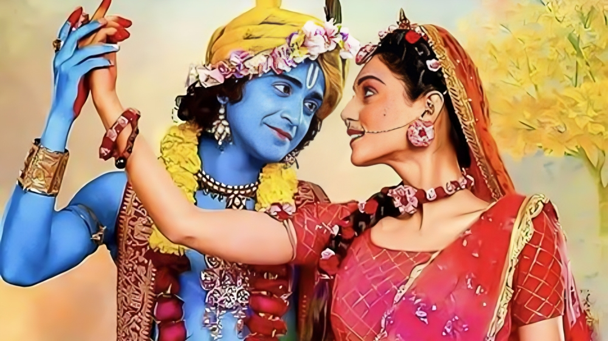

The main events of Holi typically begin with Holika Dahan, also
known as Chhoti Holi or the lighting of bonfires. This event takes
place on the night before the main day of Holi and symbolizes the
victory of good over evil. People gather around large bonfires,
often built with wood, dried leaves, and other combustible
materials. As the flames roar, effigies of Holika, the demoness from
Hindu mythology, are burned to commemorate the story of Prahlada's
triumph over her. The bonfires also serve as a ritual to ward off
evil spirits and purify the environment, ushering in positive energy
and new beginnings.
On the day of Holi, known as Rangwali Holi or Dhulandi, the
festivities reach their peak with the playful and colorful events
that have become synonymous with the festival. One of the most
iconic activities of Holi is the throwing and smearing of colored
powders and water, known as "gulal" and "abir." People of all ages
and backgrounds come together in public spaces, streets, and parks
to participate in this joyful ritual. They playfully drench each
other in vibrant hues, creating a kaleidoscope of colors that
symbolize the diversity and beauty of life.

Music and dance play an integral role in Holi celebrations, adding
to the festive atmosphere and energy. Traditional Holi songs, called
"Holi ke Rang" or "Holi geet," are sung with enthusiasm, accompanied
by lively beats of drums, cymbals, and other musical instruments.
People dance joyously to the rhythm of these songs, performing
traditional folk dances like the energetic "dandiya raas," the
lively "bhangra," or the graceful "garba." These dance forms not
only entertain but also foster a sense of community and togetherness
among participants.
Another popular event during Holi is the Holi Milan, where friends,
family members, and neighbors come together to exchange greetings,
sweets, and good wishes. It is a time for reconciliation,
forgiveness, and strengthening of bonds, as people put aside their
differences and celebrate the spirit of unity and love. Traditional
sweets like "gujiya," "malpua," and "thandai" are shared as part of
the festivities, adding a delicious touch to the celebrations.


In some regions of India, Holi is also celebrated with cultural
performances and rituals that showcase the rich heritage and
diversity of the country. For example, in Mathura and Vrindavan, the
birthplace of Lord Krishna, Holi is celebrated with great fervor and
includes elaborate processions, folk dances like "Raas Leela," and
theatrical performances depicting Krishna's playful antics with
Radha and other gopis. The temples and streets come alive with
colors, music, and devotion, creating a mesmerizing spectacle for
locals and tourists alike.
The spirit of Holi extends beyond India, with people around the world
embracing the colorful festivities and adapting them to their own
cultural contexts. In countries like Nepal, Bangladesh, Pakistan, and
various parts of Southeast Asia, Holi is celebrated with similar
enthusiasm and includes a mix of traditional rituals and modern events.
Communities come together to enjoy the spirit of togetherness, joy, and
celebration, making Holi a truly global festival of unity and happiness.
In recent years, Holi has also gained popularity in Western countries,
where multicultural communities organize Holi-themed events, parties,
and concerts. These celebrations often feature live music performances,
DJ sets, dance shows, and of course, the iconic color-throwing
activities that have become synonymous with Holi. It is a time for
people from diverse backgrounds to come together, embrace cultural
diversity, and celebrate the universal themes of love, friendship, and
positivity.